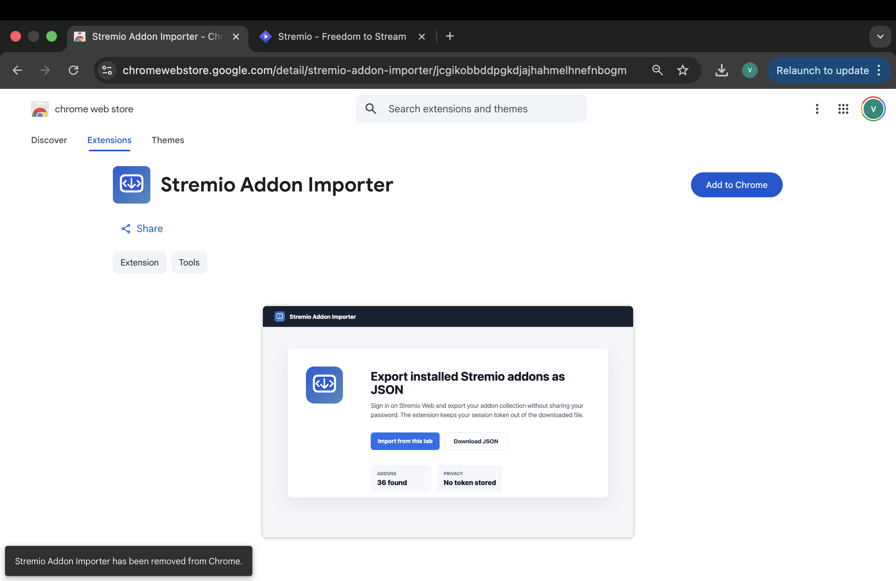
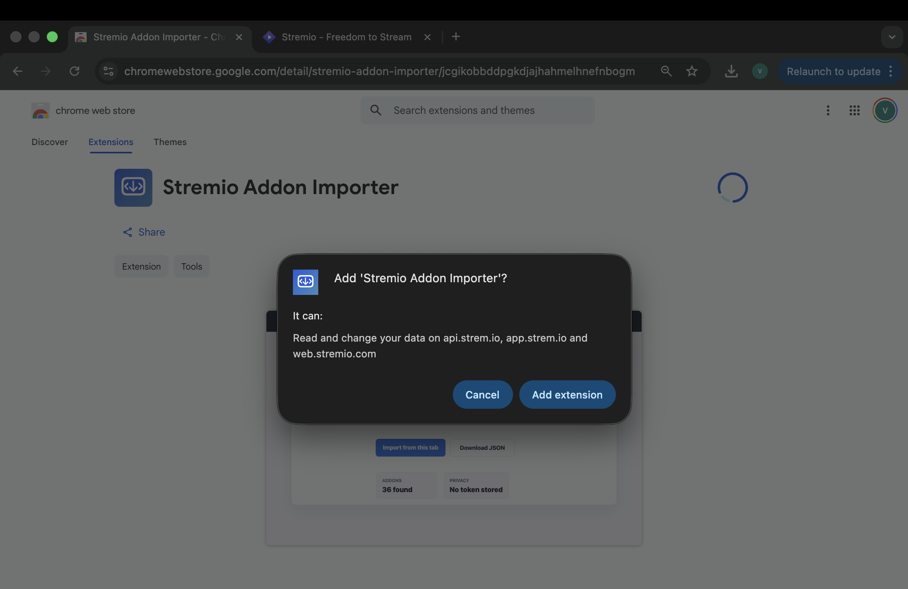
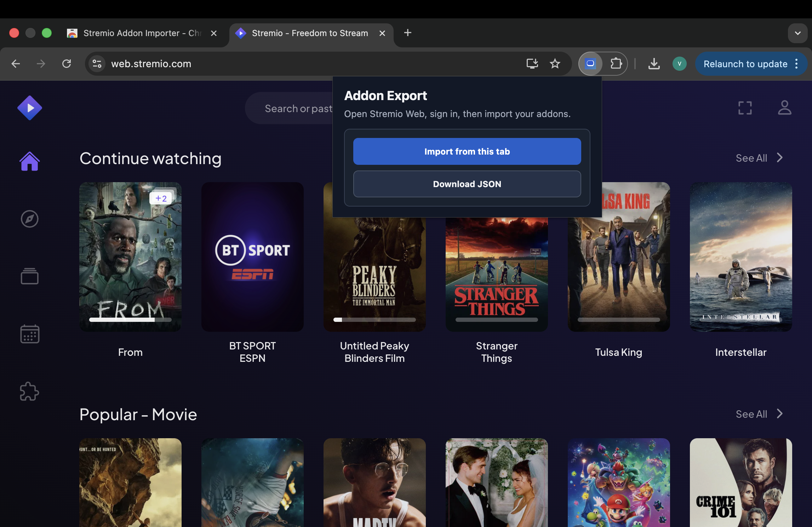
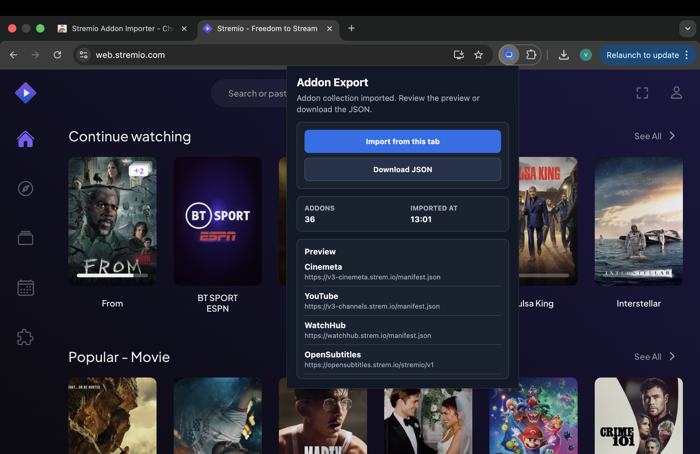

Export from Stremio Web
Install the browser extension, open Stremio Web, then download the addon export JSON.
1
Open the extension page
Open the Stremio Addon Importer listing in the Chrome Web Store. This extension creates the JSON file that Debrify can import.

Open the Stremio Addon Importer extension listing
2
Install the extension
Click Add to Chrome, then confirm with Add extension. Chrome shows the Stremio domains the extension can access.
Add to Chrome
Add extension
Stremio Web access

Confirm the extension install in Chrome
3
Open Stremio Web and sign in
Open Stremio Web, sign in, then open the extension from the browser toolbar. Click Import from this tab.
Click here to open Stremio Web
Sign in first
Import from this tab

Use the extension while Stremio Web is open and signed in
4
Download the JSON export
After the extension reads your addon list, it shows a preview. Click Download JSON and keep that file ready for Debrify.
Preview addons
Download JSON

Download the exported addon JSON file